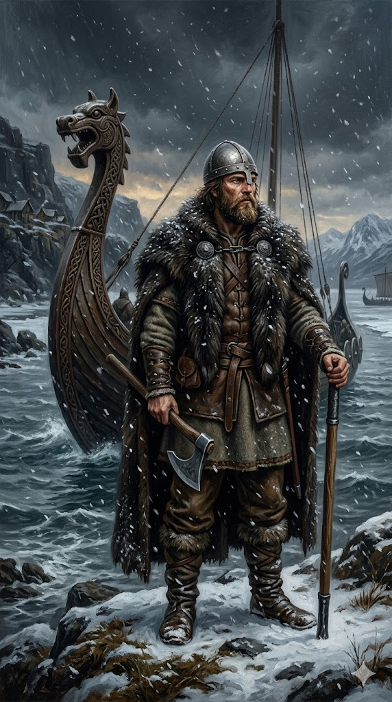

לייף אייריקסון

לחץ על התמונה להגדלה
מקור ומשמעות השם המלא (אטימולוגיה)
שם פרטי: לייף (Leif / Leifr)
השם "לייף" מגיע מהשפה הנורדית העתיקה (Old Norse) – השפה שדיברו הוויקינגים ותושבי סקנדינביה בימי הביניים. במקור נכתב השם כ-Leifr.
פירוש מילולי: משמעות המילה "Leifr" בנורדית עתיקה היא "יורש", "צאצא", "מורשת" או "זה שנשאר מאחור" (במובן של מי שממשיך את שושלת המשפחה).
ההקשר התרבותי: בחברה הוויקינגית, למורשת ולשושלת המשפחתית היה ערך עליון. הענקת שם שפירושו "היורש" מעידה על הציפיות הגדולות שהיו מהילד להמשיך את דרכם המפוארת של אבותיו.
שם אב / משפחה: אייריקסון (Erikson / Eiríksson)
חשוב להבין שבנורווגיה ובאיסלנד באותה תקופה (וגם באיסלנד של ימינו), לא היו "שמות משפחה" במובן המודרני, אלא השתמשו בשיטה הפטרונימית – שם המעיד על שם האב.
השם מורכב משני חלקים:
חלק ראשון - Eiríks: שייכות לשם "אייריק" (אריק). אביו של לייף היה אריק תורוואלדסון, הידוע בהיסטוריה כ"אריק האדום" (Eiríkr inn rauði) – מקים ההתיישבות הנורדית בגרינלנד.
חלק שני - son: המילה הנורדית והאנגלית ל"בן".
משמעות כוללת: שמו המלא של לייף הוא פשוטו כמשמעו: "לייף, בנו של אריק". הוא נושא עליו את חותמו של אביו, אחד המנהיגים והחוקרים הנודעים ביותר של זמנו.
כינוי היסטורי: Leifr inn heppni
בסאגות האיסלנדיות הוא מופיע לעתים קרובות בכינוי "לייף בר-המזל" (Leif the Lucky). כינוי זה ניתן לו (לפי סאגת אריק האדום) לאחר שהציל צוות של ספינה ויקינגית טרופה בדרכו חזרה מוינלנד.
ילדות ורקע מוקדם
לייף אייריקסון נולד, ככל הנראה, באיסלנד סביב שנת 970 לספירה. הוא גדל בצל דמותו הדומיננטית של אביו, "אריק האדום" – אדם כריזמטי אך סוער ואלים, שהוגלה מנורווגיה לאיסלנד בשל מעורבותו ברצח, ובהמשך הוגלה גם מאיסלנד מאותה סיבה בדיוק. בעקבות הגלייתו מאיסלנד (סביב שנת 982), אריק האדום הפליג מערבה וגילה את גרינלנד.
לייף הצעיר עקר עם משפחתו להתיישבות החדשה שייסד אביו בגרינלנד. גדילה בסְפָר (Frontier) הקפוא והאכזר של גרינלנד עיצבה אותו. הוא חונך על ברכי התרבות הוויקינגית: הוא למד לנווט בים סוער, לבנות ולתחזק ספינות "דראקאר" (ספינות ארוכות ויקינגיות), לשרוד בתנאים קיצוניים, ולהיות מנהיג גברים. לעומת אביו הפגאני האדוק, לייף נחשף גם להשפעות נוצריות, עובדה שתעצב את דרכו בהמשך.
אידאולוגיה, מניעים ותפיסת עולם
בניגוד לחוקרים המאוחרים יותר של "עידן התגליות" (כמו קולומבוס או קורטס) שהונעו על ידי חיפוש אחר זהב והקמת אימפריות כלכליות גלובליות, מניעיו של לייף אייריקסון נבעו מתרבות ההישרדות של ימי הביניים המוקדמים והמסורת הוויקינגית של התפשטות (Expansionism).
ההתיישבות בגרינלנד הייתה ענייה במשאבים קריטיים, ובראשם עץ (הדרוש לבניית בתים וספינות) ושטחי מרעה פוריים. על פי הסאגות, לייף שמע מספן בשם ביארני הריולפסון (שספינתו נסחפה מערבה בטעות) על אדמות מיוערות הנמצאות הרחק ממערב לגרינלנד. המניע העיקרי של לייף ליציאה למסע היה מעשי וכלכלי: מציאת משאבי עץ ואדמה טובה עבור המושבה בגרינלנד.
לצד זאת, היה גם מניע דתי. בסביבות שנת 999, לייף הפליג לנורווגיה ושימש כשומר ראשו של המלך אולאף טריגבאסון. המלך המיר את דתו של לייף לנצרות והטיל עליו משימה אידאולוגית: לשוב לגרינלנד ולהמיר את דתם של המתיישבים הנורדים. מסעו מערבה שילב אפוא את רוח ההרפתקנות הוויקינגית, הצורך החומרי בעץ, והרצון לבסס את מעמדו כמנהיג בחסות נורווגית-נוצרית.
נסיבות היסטוריות למסע
המסע של לייף אייריקסון יצא לפועל בתקופה המכונה "תור הזהב של הוויקינגים" (Viking Age). באותן שנים, טכנולוגיית בניית ספינות הדראקאר (Drakkar) – ספינות ארוכות, חזקות וגמישות – הגיעה לשיאה ואפשרה ניווט באוקיינוס הפתוח. תנאי האקלים סביב שנת 1000 לספירה (תקופה הידועה כ"התחממות של ימי הביניים" - Medieval Warm Period) הפכו את הים הצפוני והאוקיינוס האטלנטי לפחות קפואים ומסוכנים להפלגה. במקביל, הגירושים של אביו, אריק האדום, דחפו את המשפחה לקצה העולם המוכר (גרינלנד), מקום דל במשאבים, מה שחייב אותם לחפש באופן אקטיבי עתודות עץ ואדמות מרעה במערב הרחוק.
המסע ההיסטורי לאמריקה (סביב 1000 לספירה)
המסע של לייף אייריקסון מערבה לא היה הפלגה עיוורת אל הלא נודע. הוא התבסס על מידע קונקרטי. לייף קנה את ספינתו של ביארני הריולפסון (הספן שראה אדמות ממערב לגרינלנד אך לא ירד לחוף), וגייס צוות של 35 ספנים ולוחמים ויקינגים קשוחים. התכנון שלו היה לשחזר את נתיבו של ביארני, אך בסדר הפוך.
שלבי המסע:
הוא הפליג מגרינלנד צפונה ומערבה. התחנה הראשונה אליה הגיע הייתה ארץ צחיחה ומלאה בקרחונים וסלעים שטוחים. הוא קרא לה "הלולנד" (Helluland - ארץ האבנים השטוחות). חוקרים מודרניים מזהים אותה כאי באפין (Baffin Island) שבצפון קנדה.
מכיוון שהלולנד לא הציעה דבר למתיישבים, לייף וצוותו הפליגו דרומה. לאחר ימים של הפלגה, הם הגיעו לארץ שטוחה, בעלת חופים לבנים, המכוסה ביערות עבותים. זו הייתה בדיוק האדמה שחיפשו. הוא קרא לה "מארקלנד" (Markland - ארץ היערות) – המזוהה כיום עם חופי חצי האי לברדור בקנדה. היערות היו חיוניים לאספקת העץ עבור המתיישבים בגרינלנד נטולת העצים.
הצוות המשיך דרומה, הגיע למצר ים ונחת באזור עשיר ופורה באופן יוצא דופן עבור ויקינגים הרגילים לקרח. הם מצאו שם נהרות מלאים בדגי סלמון ענקיים, אדמות מרעה שבהן לא היה כפור בחורף, ולפי הסאגות – גם גפני בר ופירות יער (מהם ניתן לייצר יין). לייף העניק לאזור את השם המפורסם מכל: "וינלנד" (Vinland - ארץ היין/הגפנים). הם החליטו להקים במקום מחנה לחורף וקראו לו "לייפסבודיר" (הבתים של לייף). בתום החורף, הם חזרו לגרינלנד עם ספינה עמוסה בעץ ובענבים.
גילויים מרכזיים והשפעותיהם
מהות הגילויים: במשך מאות שנים, סיפורי המסע של לייף אייריקסון נחשבו למיתוסים או אגדות עם ויקינגיות המופיעות בסאגות האיסלנדיות. הגילוי האמיתי של וינלנד היה הוכחה לכך שאירופאים חצו את האוקיינוס האטלנטי ויצרו קשר עם יבשת צפון אמריקה כחמש מאות שנה לפני כריסטופר קולומבוס. זו הייתה הפלגה טרנס-אוקיינית פנומנלית שהעידה על היכולות הטכנולוגיות המדהימות של ספינות הדראקאר הוויקינגיות ועל יכולות הניווט (בעזרת כוכבים, זרמים ומעוף ציפורים) של הימאים הנורדים.
השפעות ארוכות טווח ומדוע הגילוי "נעצר": למרות שבירת הנרטיב ההיסטורי שיחס לקולומבוס את הבכורה, לגילוי של לייף לא הייתה השפעה גלובלית ארוכת טווח. בניגוד לקולומבוס, לא היה לו את הגיבוי הכלכלי והאימפריאלי (כמו מספרד). המושבות בגרינלנד היו קטנות ומבודדות מכדי לתחזק אימפריה מעבר לים. בנוסף, הוויקינגים נתקלו בהתנגדות אלימה ועזה מצד הילידים האינדיאנים באמריקה (אותם כינו "סְקְרֶלִינְגִים"). לאחר ניסיונות התיישבות מדממים, ההתיישבות ננטשה ווינלנד נותרה זיכרון היסטורי מתוק בלבד.
מקורות וביבליוגרפיה (אימות מחקר)
- "הסאגות של האיסלנדים" (Sagas of Icelanders): המקורות הכתובים המרכזיים המספרים את סיפורו של לייף אייריקסון הם שני טקסטים מימי הביניים: "סאגת הגרינלנדים" (Grænlendinga saga) ו-"סאגת אריק האדום" (Eiríks saga rauða). סאגות אלו נכתבו במאות ה-13 וה-14 ומבוססות על מסורות שבעל-פה.
- מחקר ארכיאולוגי: Ingstad, Helge; Ingstad, Anne Stine (2000). The Viking Discovery of America: The Excavation of a Norse Settlement in L'Anse Aux Meadows, Newfoundland. (הספר המסכם את גילוי אתר ההתיישבות הוויקינגי בקנדה שהוכיח את נכונות הסאגות).
- מוסד הסמית'סוניאן (Smithsonian Institution): אוספים ומאמרים רשמיים של המוזיאון הלאומי להיסטוריה של הטבע בארה"ב בנושא התפשטות הוויקינגים בצפון האוקיינוס האטלנטי.